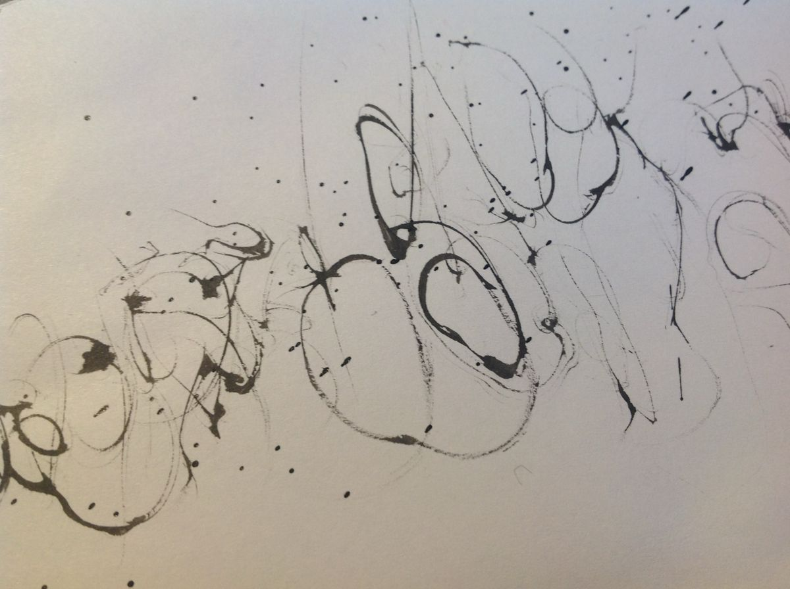
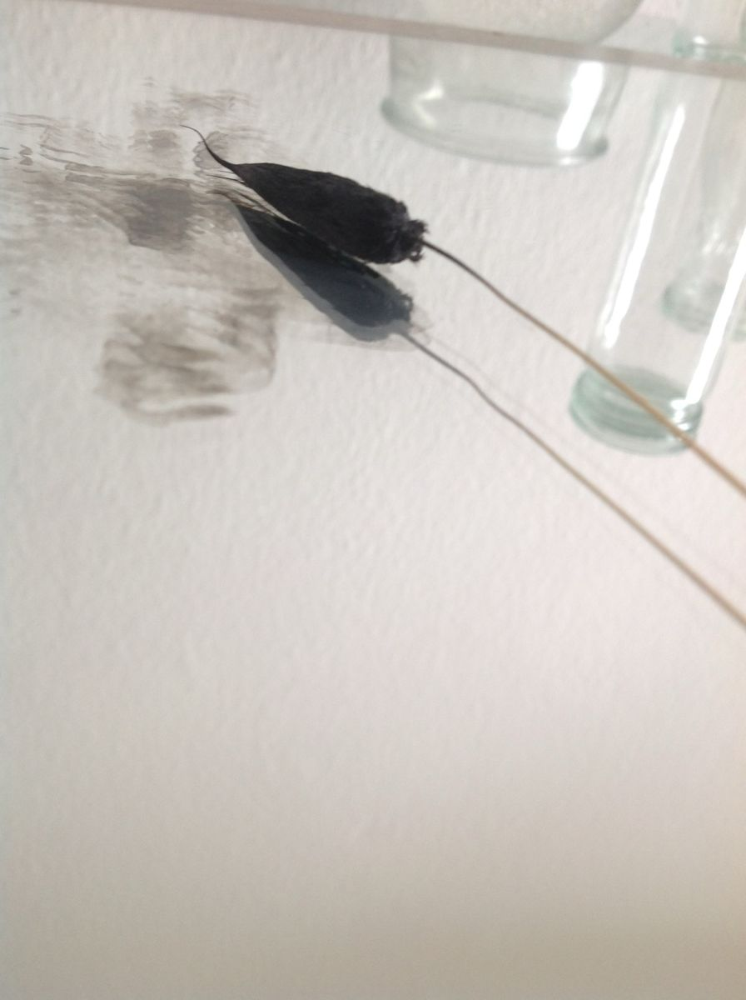
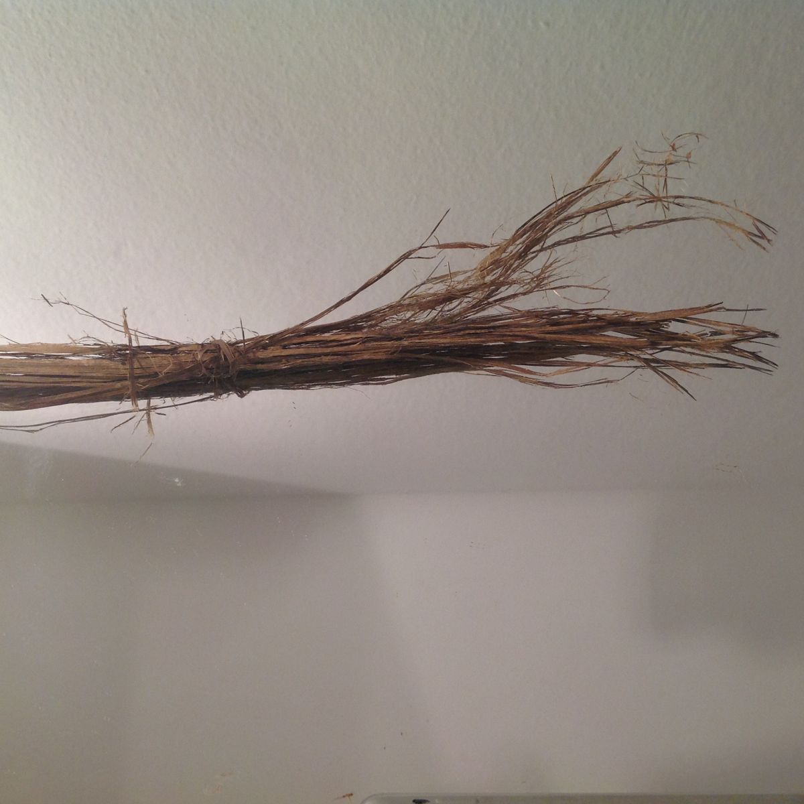
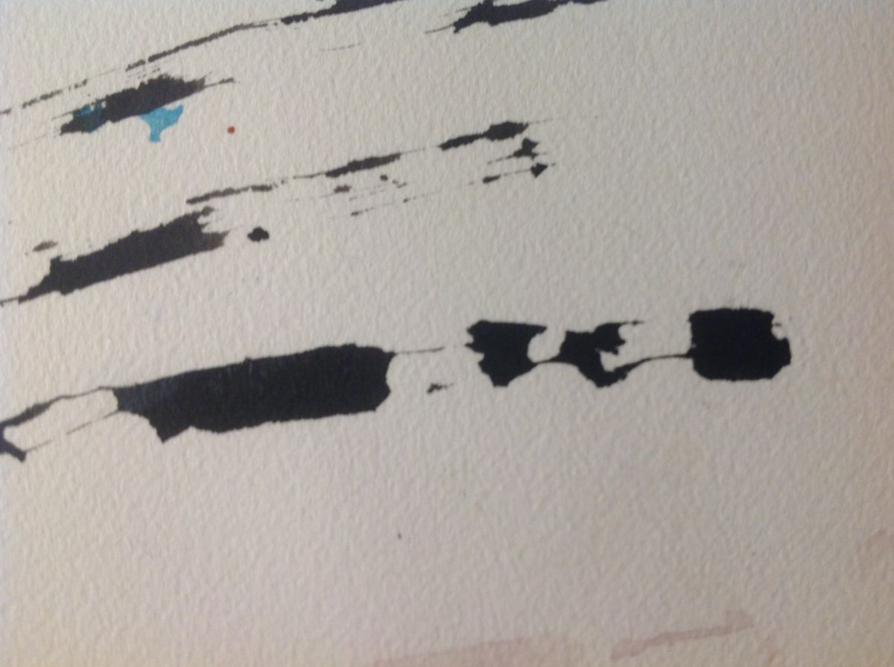

Inspirationen aus der Praxis für die PraxisInspirations from practice for practice
Hier sammle ich Formen aus meiner Arbeit mit Material, Körper und Bild, die sich in der Praxis bewährt haben. Jede Erweiterung bringt eine neue Gruppe dazu, vom Takt über verlängerte Werkzeuge, Zufall und Umhüllen bis zur Arbeit mit Fotos. Klick auf eine Karte, um Details zu sehen.Here I collect forms from my work with material, body and image that have proven themselves in practice. Each extension adds a new group, from rhythm, extended tools, chance and enfolding to working with photos. Click a card to see the details.
Diese Übersicht wächst.This overview is growing.Sie wird regelmäßig erweitert, jeweils mit einer neuen Gruppe von Formen. Stand November 2026: Erweiterung 1, Takt finden, Rhythmus im Material, Körper und Paararbeit. Erweiterung 2, Verlängern, Zeichnen mit verlängerten Werkzeugen. Erweiterung 3, ZuFall, Arbeiten mit Schwerkraft und Zufall. Erweiterung 4, Umhüllen, von außen nach innen bergen. Erweiterung 5, Ins Bild setzen, Motive finden und bauen.It is extended regularly, each time with a new group of forms. Status November 2026: extension 1, Finding the beat, rhythm in materials, body and pair work. Extension 2, Extending, drawing with extended tools. Extension 3, Chance, working with gravity and chance. Extension 4, Enfolding, sheltering from the outside in. Extension 5, Framing, finding and building subjects.
Neu: Erweiterung 5, Ins Bild setzen.New: extension 5, Framing.23 Karten zur Arbeit mit Fotos, vom Weg in Etappen über den verrückten Frühstückstisch bis zum eingehüllten Baum. Neu ist auch der Ort „In der Klinik“, für Karten, die Patient:innen in der therapiefreien Zeit allein machen können.23 cards on working with photos, from the way in stages and the crazy breakfast table to the wrapped tree. Also new is the place "In the clinic", for cards patients can do on their own between therapy sessions.Direkt zu Erweiterung 5Go to extension 5
Oder nach dem, was gerade gebraucht wirdOr by what is needed right now
Oder nach dem OrtOr by place
Erweiterung 1Extension 1
Takt findenFinding the beat
Im Material, im Körper und zu zweitIn material, body and pair work
Gleichmäßiges Tupfen auf nasses oder trockenes Papier, in Reihen oder Feldern. Die Bewegung kommt aus dem Handgelenk, nicht aus dem Arm. Gut für den Einstieg, weil das Ergebnis klein und überschaubar bleibt.Steady dabbing on wet or dry paper, in rows or fields. The movement comes from the wrist, not the arm. Good for starting, because the result stays small and manageable.
WannWhen
Einstieg, Unruhe, ZappeligkeitTo begin, when restless or fidgety
VorsichtCaution
Bei Reizüberflutung das Tempo bremsen.If overstimulated, slow the tempo.
Großflächiges Verteilen mit Schwamm, breitem Pinsel oder Lappen. Wiederholte Schichten entstehen im Takt des Körpers. Die Bewegung braucht Raum und Schwung, deshalb eignet sich das Format eher groß.Large areas spread with a sponge, wide brush or cloth. Layers build up in the body's rhythm. The movement needs room and swing, so a large format suits it best.
WannWhen
Enge im Körper, starkes Festhalten an KontrolleWhen the body is tight and control is held hard
VorsichtCaution
Kann Gefühle aufwühlen. Einen Abschluss einplanen.This can stir feelings. Plan a closing moment.
Farbe fließt in angefeuchtetes Papier und setzt sich dort nach eigenen Gesetzen fest. Der Rhythmus liegt im Wechsel zwischen Eingreifen und Loslassen.Paint flows into damp paper and settles by its own rules. The rhythm lies in the shift between intervening and letting go.
WannWhen
Perfektionismus, BlockadePerfectionism, blockage
VorsichtCaution
Das Ergebnis bleibt offen. Eine Nachbesprechung ist wichtig.The result stays open. Talking it through afterwards matters.
Ein langer Stil, der die Hand auf Abstand zum Papier hält. Die Bewegung wird größer, weil sie aus Schulter und Oberkörper kommt. Man spürt die Weite selbst und sieht sie im Strich.A long handle that keeps the hand away from the paper. The movement grows larger because it comes from shoulder and upper body. You feel the space yourself and see it in the stroke.
WannWhen
Enges oder feines Arbeiten, Bedürfnis nach WeiteTight or fine work, or a need for space
VorsichtCaution
Platz im Raum sichern, Schulter schonen.Secure room in the space, protect the shoulder.
Der Pinsel hängt an einer Schnur und pendelt oder wird geschwungen. Die Hand gibt nur den Impuls, der Rest entsteht durch Schwung, Schwerkraft und Zufall. Das Pendeln ist selbst ein Rhythmus.The brush hangs from a string and swings or pendulums. The hand gives only the impulse, the rest comes from momentum, gravity and chance. The swinging is a rhythm in itself.
WannWhen
Starkes Festhalten, PerfektionismusStrong holding on, perfectionism
VorsichtCaution
Ohnmachtsgefühle auffangen und kurz besprechen.Catch feelings of helplessness and talk them through briefly.
Ein Blatt im Querformat, dazu Blau und Orange. Beim langen Ausatmen zieht der Pinsel einen blauen Strich, beim kürzeren Einatmen einen orangen. Mit der Zeit verlängerst du die Striche ganz langsam, und der Atem wird mit ihnen länger. Die Komplementärfarben halten das Blatt lebendig, auch wenn es ruhig wird.A sheet in landscape format, with blue and orange. On the long out-breath the brush draws a blue stroke, on the shorter in-breath an orange one. Over time you lengthen the strokes very slowly, and the breath grows longer with them. The complementary colours keep the sheet alive even as it grows calm.
WannWhen
Unruhe, flacher Atem, Anspannung vor dem EinschlafenRestlessness, shallow breathing, tension before sleep
VorsichtCaution
Den Atem nie erzwingen. Wem schwindelig wird, der atmet wieder normal und malt kurze Striche.Never force the breath. Anyone who feels dizzy goes back to normal breathing and paints short strokes.
Kurze, gleich lange Striche in einer Richtung oder mit wechselndem Druck. Bei Grübelneigung hilft die Zählbarkeit der Striche, den Gedankenlauf zu unterbrechen.Short strokes of equal length, in one direction or with changing pressure. When thoughts loop, counting the strokes helps interrupt the chain.
Kann monoton wirken. Variation einbauen.Can feel monotonous. Add variation.
Ein Metronom, Klatschen oder ein Musikstück gibt den Takt vor, die Hand folgt. Verbindet Hören und Bewegung und schult die Synchronisation.A metronome, clapping or a piece of music sets the beat, and the hand follows. It links listening and movement and trains synchronisation.
WannWhen
Schwierigkeiten, sich zu spürenTrouble sensing oneself
VorsichtCaution
Bei empfindlichem Gehör die Lautstärke anpassbar halten.With sensitive hearing, keep the volume adjustable.
Kreisende Bewegungen mit Kohle oder Ölkreide, nach innen oder außen gerichtet. Geben Zentrierung und ein Gefühl von Rückkehr.Circling movements with charcoal or oil pastel, turning inward or outward. They offer centring and a sense of coming back.
WannWhen
Zerstreutheit, Suche nach HaltScattered attention, looking for hold
VorsichtCaution
Bei Schwindel oder Enge im Brustraum Pausen einplanen.With dizziness or tightness in the chest, take breaks.
Im Wechsel: ein Strich mit der dominanten Hand, dann einer mit der anderen. Gleichzeitig: beide Hände führen Striche zur selben Zeit, einmal spiegelbildlich, einmal frei. Die ungewohnte Hand darf zittrig und ungenau sein. Es geht um den Rhythmus, nicht um das Ergebnis.In turns: one stroke with the dominant hand, then one with the other. Together: both hands draw at the same time, once mirrored, once freely. The unfamiliar hand may be shaky and imprecise. The point is the rhythm, not the result.
WannWhen
Festhalten, zu viel Planung, der Kopf bleibt hängenHolding on, over-planning, the mind stuck
VorsichtCaution
Kleine Formate wählen, nach zwei Minuten beenden dürfen.Choose small formats, and allow stopping after two minutes.
Ton oder Knetmasse in gleichmäßigen Bewegungen durchkneten, bis die Masse warm und geschmeidig wird. Wirkt beruhigend und erdend.Knead clay or modelling compound in steady movements until it turns warm and pliable. It calms and grounds.
WannWhen
Innere Unruhe, Gefühl des AuseinanderfallensInner restlessness, feeling of falling apart
VorsichtCaution
Material pflegen, Hände zwischendurch wärmen.Look after the material, warm your hands in between.
Mit dem Holzlöffel oder der Faust in den Ton, im Takt. Schafft Entladung und Erfahrung von eigener Kraft im geordneten Rahmen.Tap or strike the clay with a wooden spoon or fist, in rhythm. It brings release and the experience of one's own strength within a clear frame.
WannWhen
Spannung, Wut im geschützten RahmenTension, anger within a protected frame
VorsichtCaution
Den Rahmen klar setzen, Tempo und Stärke begrenzen, Lautstärke bedenken.Set the frame clearly, limit tempo and force, and consider the volume.
Ton oder Masse mit dem Nudelholz oder den Händen in gleichmäßigen Bahnen ausrollen. Die Form entsteht aus dem Rhythmus und muss nicht geplant werden.Roll clay or compound in even strips with a rolling pin or hands. The form arises from the rhythm and does not have to be planned.
Mit Draht oder Messer gleichmäßige Scheiben oder Abstände herstellen. Schafft Ordnung und klare Grenzen.Make even slices or spacings with wire or a knife. It creates order and clear boundaries.
WannWhen
Themen rund um AbgrenzungThemes around setting limits
VorsichtCaution
Werkzeug nur nach Anleitung verwenden.Use tools only after instruction.
Klopfen auf Ton oder Papier geschieht oft fast von selbst in einem Tempo, das dem eigenen Herzschlag ähnelt. Man kann diesen Takt bewusst aufnehmen: zuerst den eigenen Puls fühlen, dann im selben Tempo klopfen, danach langsam verlangsamen.Tapping on clay or paper often happens almost by itself, at a pace close to the heartbeat. You can take this beat on purpose: first feel your pulse, then tap at the same pace, then slow down gradually.
VorsichtCaution
Bei Herz-Kreislauf-Beschwerden den Puls nicht als Taktvorgabe nutzen, sondern das Tempo frei wählen.With heart or circulation problems, don't use the pulse as a guide. Choose your own tempo.
Kneten lässt sich als Bild für Verarbeitung erleben. Viele Teilnehmende greifen dieses Bild selbst auf, wenn sie von schwierigen Erfahrungen sprechen. Es ist eine Metapher für das Erleben, keine Aussage über körperliche Vorgänge.Kneading can be experienced as an image of processing. Many participants pick up this image themselves when they talk about difficult experiences. It is a metaphor for experience, not a statement about physical processes.
Im GesprächIn conversation
Welches Bild stellt sich beim Kneten ein, und was sagt es über den Umgang mit einer Belastung?Which image comes up while kneading, and what does it say about how someone handles a strain?
Mit jedem Ausatmen einen Strich ziehen oder einen Tupfer setzen, beim Einatmen die Hand heben. Die Ausatmung ist meist länger als die Einatmung und trägt den Rhythmus. Wer sich angespannt fühlt, kann sie bewusst verlängern.With each exhale draw a stroke or set a dab, and raise the hand on the inhale. The exhale is usually longer than the inhale and carries the rhythm. If you feel tense, you can lengthen the exhale on purpose.
Im Raum gehen, im eigenen Tempo, dann auf ein Signal hin stehen bleiben und die Füße spüren. Danach einen Tupfer oder Strich setzen, der den Schritt des Momentes zeigt. Im Sitzen funktioniert derselbe Gedanke über das Gewicht: Fersen und Zehen abwechselnd anheben.Walk around the room at your own pace, then stop on a signal and feel your feet. Then set a dab or stroke that shows the step of the moment. Sitting, the same idea works through weight: lift heels and toes alternately.
VorsichtCaution
Bei Schmerzen, Verletzungen oder Gleichgewichtsproblemen anpassen oder im Sitzen durchführen.With pain, injury or balance problems, adapt the exercise or do it seated.
Zwei Personen zeichnen abwechselnd auf demselben Blatt, ohne Worte. Jede Linie nimmt Bezug auf die vorherige, und die Pausen werden zu einem Teil des Bildes.Two people draw in turns on the same sheet, without words. Each line responds to the one before, and the pauses become part of the picture.
VorsichtCaution
Platz für beide sichern, Anfang klar absprechen.Secure room for both, agree clearly on who starts.
Eine Person führt eine langsame Bewegung über dem Blatt, die andere spiegelt sie. Nach einigen Minuten wechseln die Rollen.One person leads a slow movement over the sheet, the other mirrors it. After a few minutes the roles switch.
VorsichtCaution
Rollen wechseln, Berührung nur mit Absprache.Switch roles, touch only with agreement.
Ein Stück Ton wird zwischen zwei Personen weitergegeben. Jede knetet einen Abschnitt im eigenen Rhythmus, danach gemeinsam im selben Takt.A piece of clay is passed between two people. Each kneads a section in their own rhythm, then both together in the same beat.
VorsichtCaution
Ton feucht halten, Einfluss beobachten.Keep the clay moist, notice your influence.
Beide Personen beobachten den Atem der anderen, ohne ihn zu kommentieren. Sobald sich ein gemeinsamer Rhythmus einstellt, zieht jeder Atemzug einen Abschnitt der Linie.Both people watch the other's breath without commenting. Once a shared rhythm settles, each breath draws a section of the line.
VorsichtCaution
Nähe und Blickkontakt selbst wählen lassen.Let each person choose their own closeness and eye contact.
Vor jeder Übung gilt:Before every exercise:Rhythmus ist nicht für alle gleich gut. Ein ruhiger Takt kann einen wütenden Menschen noch wütender machen, ein schneller einen müden aufschrecken. Entscheidend ist, ob der Rhythmus zum gegenwärtigen Zustand passt.Rhythm does not suit everyone equally. A calm beat can make an angry person angrier, a fast one can startle a tired person. What matters is whether the rhythm fits the present state.
Bei akuter Krise oder starker Überflutung zuerst stabilisieren, bevor rhythmisch intensiv gearbeitet wird. Bei Trauma-Erfahrung das Tempo selbst bestimmen lassen. Körperliche Berührung nur mit ausdrücklicher Zustimmung.In an acute crisis or strong overwhelm, stabilise first before working intensively with rhythm. With trauma experience, let the person set the tempo. Physical touch only with explicit consent.
Erweiterung 2Extension 2
VerlängernExtending
Zeichnen mit verlängerten WerkzeugenDrawing with extended tools
Denken endet nicht an der Hand. Sobald ein Werkzeug zwischen dir und dem Papier liegt, wird es Teil deiner Wahrnehmung. Fast alles kann dieses Werkzeug sein: ein Halm, ein Zweig, ein Bündel Gras, eine Feder, eine raue Oberfläche unter dem Blatt. Jedes Material antwortet anders. Die Spur zeigt dir, was zwischen Hand und Material passiert ist.Thinking reaches past the hand. As soon as a tool sits between you and the paper, it becomes part of how you perceive. Almost anything can be that tool, a grass stalk, a twig, a bundle of grass, a feather, a rough surface under the sheet. Every material answers in its own way. The trace shows you what happened between hand and material.
Dünne, schnelle Linien, die leicht springen und abreißen. Er verlangt eine ruhige Hand und belohnt sie mit feinen Spuren.Thin, quick lines that jump and break off easily. It asks for a calm hand and rewards it with fine traces.
WannWhen
Wenn jemand leiser werden oder genauer hinspüren möchteWhen someone wants to grow quieter or feel more precisely
VorsichtCaution
Bei Ungeduld kann der Halm frustrieren. Abbrechen ist erlaubt.Impatience can turn into frustration. Stopping is allowed.

Spuren eines Halms. Aus meinem Atelier.Traces of a grass stalk. From my studio.
Der pelzige Kopf saugt sich voll und gibt die Tusche weich und unregelmäßig ab. Gut zum Tupfen, Streicheln, leisen Ansetzen. Besonders schön ist Hasenschwanzgras.The furry head soaks up ink and releases it softly and unevenly. Good for dabbing, stroking, setting down gently. Hare's tail grass is especially lovely.
WannWhen
Wenn Berührung sanft bleiben sollWhen touch should stay gentle
VorsichtCaution
Der Kopf nimmt viel Tusche auf. Ein Probeblatt daneben legen.The head takes up a lot of ink. Keep a test sheet next to you.

Ein Halm als Pinsel. Er nimmt die Tusche auf, wie er will. Aus meinem Atelier.A grass stalk as a brush. It takes up the ink the way it likes. From my studio.
Mehrere Halme, mit einem Faden zusammengebunden. Satte, breite Flächen, die plötzlich aufreißen und in feinen Fasern auslaufen. Er lädt dazu ein, kräftig zuzuschlagen.Several stalks tied together with thread. Rich, broad patches that suddenly tear open and run out into fine fibres. It invites you to strike hard.
WannWhen
Bei aufgestauter Spannung oder dem Wunsch, deutlich zu werdenWith built-up tension, or a wish to be clear
VorsichtCaution
Spritzt gern. Unterlage und Kleidung schützen, danach einen ruhigen Abschluss finden.It likes to splash. Protect the table and your clothes, then find a calm ending.

Ein selbst gebundener Halmpinsel. Aus meinem Atelier.A hand-bound grass brush. From my studio.

Seine Spur. Aus meinem Atelier.Its trace. From my studio.
Ein Stück Holz, in Tusche getaucht. Es kratzt, stockt und hinterlässt harte Kanten. Die Hand muss sich auf ein Werkzeug einlassen, das kaum nachgibt.A piece of wood dipped in ink. It scratches, stalls and leaves hard edges. The hand has to engage with a tool that barely gives.
WannWhen
Wenn jemand die eigene Grenze spüren oder Widerstand ausprobieren möchteWhen someone wants to feel their own limit or try out resistance
VorsichtCaution
Raue Zweige vorher prüfen, Splitter entfernen.Check rough twigs first and remove splinters.
Ein Blatt liegt auf einer rauen Fläche, Rinde, Holz, Stein oder Stoff. Mit Kreide, Grafit oder Wachs reibst du darüber, und die Struktur taucht auf. Die Oberfläche zeichnet mit. Die Hand tastet durch das Papier hindurch und findet, was darunter liegt.A sheet lies on a rough surface, bark, wood, stone or fabric. You rub over it with crayon, graphite or wax, and the structure appears. The surface draws along with you. Your hand feels through the paper and finds what lies beneath.
WannWhen
Zum Ankommen, bei Unruhe, wenn Halt gebraucht wirdFor arriving, in restlessness, when something to hold on to is needed
VorsichtCaution
Bei Menschen, die Druck schwer dosieren können, mit weicher Kreide beginnen.For people who find it hard to judge pressure, start with a soft crayon.
Feder, Gabel, Korken, Schnur oder was gerade herumliegt. Jedes Fundstück macht seine eigene Spur. Die Frage lautet dann, welches Werkzeug heute zu dir passt.A feather, a fork, a cork, a piece of string, whatever is lying around. Each object makes its own trace. The question then becomes which tool fits you today.
WannWhen
Bei Blockade oder PerfektionismusWith blockage or perfectionism
VorsichtCaution
Spitze und scharfe Gegenstände vorher aussortieren.Sort out pointed and sharp objects beforehand.
Ausgebürstete Haare von Katze oder Hund, mit einem Faden an ein Stöckchen gebunden. Der Pinsel ist winzig und überraschend weich. Du malst mit etwas, das du gestreichelt hast.Brushed-out hair from a cat or dog, tied to a little stick with thread. The brush is tiny and surprisingly soft. You paint with something you once stroked.
WannWhen
Wenn Nähe und Zuwendung gebraucht werdenWhen closeness and care are needed
VorsichtCaution
Bei Tierhaarallergie weglassen. Nur ausgebürstete Haare verwenden.Leave it out with pet allergies. Use only brushed-out hair.
Eine Strähne der eigenen Haare, gebunden und in Tusche getaucht. Die Spur kommt buchstäblich von dir selbst. Das kann berühren und manchmal auch irritieren.A strand of your own hair, tied and dipped in ink. The trace quite literally comes from you. That can be moving, and sometimes unsettling.
WannWhen
Wenn es um Identität und das eigene Bild von sich gehtWhen identity and the way you see yourself are the theme
VorsichtCaution
Kann starke Gefühle wecken. Immer freiwillig anbieten.Strong feelings can come up. Always offer it as a free choice.
Haarbürste, Spülbürste, Schuhbürste, Zahnbürste. Jede Bürste zieht viele Linien auf einmal. Gestrichen entstehen Bahnen, getupft Felder, über den Daumen abgestreift ein feiner Sprühregen.Hairbrush, dish brush, shoe brush, toothbrush. Every brush pulls many lines at once. Stroked, it makes tracks. Dabbed, it makes fields. Flicked over your thumb, it makes a fine spray.
WannWhen
Wenn Kraft heraus will oder eine Fläche schnell gefüllt werden sollWhen strength wants out or a surface needs filling fast
VorsichtCaution
Spritzt gern. Unterlage und Kleidung schützen.It likes to splash. Protect the table and your clothes.
Vor jeder Übung mit verlängerten WerkzeugenBefore every exercise with extended tools
Das Werkzeug soll zur Verfassung passen. Wer gerade sehr angespannt ist, findet über einen weichen Halm oft schwer hinein und braucht zuerst etwas Kräftiges. Wer erschöpft ist, wird mit einem widerständigen Zweig eher müder. Wähle das Material nach dem, was jetzt dran ist.The tool should fit the state you're in. Someone very tense often struggles to get going with a soft stalk and needs something strong first. Someone exhausted tends to grow more tired with a resistant twig. Choose the material by what today is asking for.
Erweiterung 3Extension 3
ZuFallChance
Was einem zufälltWhat falls to you
Zufall heißt oft nur, dass etwas passiert ist und du nicht weißt, wie es dir zugefallen ist. In dieser Erweiterung arbeitest du mit Schwerkraft und Zufall. Du setzt den Rahmen, also Material, Höhe, Untergrund und Moment. Dann ziehst du die Hand zurück und schaust, was dir zufällt. Die Spur entsteht zwischen deiner Entscheidung und dem, was das Material daraus macht.Chance often just means something happened and you have no idea how it fell to you. In this extension you work with gravity and chance. You set the frame, meaning material, height, ground and moment. Then you pull your hand back and watch what falls to you. The trace appears between your decision and what the material makes of it.
Fünf Schritte, frei nach der Malerin Pat SteirFive steps, loosely after the painter Pat Steir
1Rahmen setzenSet the frame
2Impuls gebenGive the impulse
3Hand zurückziehenPull your hand back
4Schauen, ohne gleich zu bewertenWatch, and hold off judging
5AntwortenRespond
Der dritte Schritt ist der schwerste.Step three is the hardest.
Ein Klumpen, mit Schwung aufs Brett geworfen. Er klatscht, platzt auf, verformt sich bei jedem Wurf neu. Laut darf es werden.A lump thrown hard onto the board. It slaps, bursts open, changes shape with every throw. It's allowed to get loud.
WannWhen
Bei aufgestauter Wut oder Anspannung, die keinen Ort hatWith built-up anger or tension that has nowhere to go
VorsichtCaution
Ende vorher ankündigen, etwa nach zehn Würfen. Plane unterlegen, Ton spritzt weit. Wirkt jemand abwesend oder erstarrt, unterbrechen und über die Füße zurück auf den Boden holen.Announce the ending in advance, say after ten throws. Lay a sheet underneath, clay travels far. If someone seems far away or freezes, stop and bring them back to the floor through their feet.
Ein faustgroßer Klumpen auf Knie-, Hüft- oder Schulterhöhe. Die Hand öffnet sich, mehr passiert nicht. Was unten liegt, hat niemand geformt. Danach eine einzige Antwort, ein Daumendruck oder eine Rille.A fist-sized lump held at knee, hip or shoulder height. The hand opens, and that's all. What lands below, nobody shaped. Then one single response, a press of the thumb or a groove.
WannWhen
Bei viel Kontrolle und wenig Vertrauen, vor EntscheidungenWith a lot of control and little trust, before decisions
VorsichtCaution
Am besten nach dem Werfen. Solange die Wut in den Armen steckt, hält die Hand fest.Best after throwing. While the anger still sits in the arms, the hand keeps gripping.
Derselbe Klumpen fällt auf Holz, Karton, ein altes Tuch, eine Schale Sand. Jeder Boden antwortet anders. Du merkst, dass du den Fall nie bestimmst, den Untergrund aber schon.The same lump falls onto wood, cardboard, an old cloth, a bowl of sand. Every ground answers differently. You notice that the fall is never yours to decide, while the ground always is.
WannWhen
Wenn jemand spüren soll, welchen Einfluss er wirklich hatWhen someone needs to feel what influence they really have
VorsichtCaution
Sand und Tuch nehmen den Aufprall weich auf. Für unruhige Menschen ein guter Anfang.Sand and cloth soften the impact. A good start for restless people.
Das Blatt lehnt schräg an der Wand oder auf einem Buch. Oben gießt du verdünnte Tusche oder Farbe auf und lässt sie herunterlaufen. Farbe, Dicke und Startpunkt wählst du. Den Weg nach unten nimmt die Schwerkraft.The sheet leans at an angle against a wall or a book. You pour thinned ink or paint at the top and let it run down. Colour, thickness and starting point are your choice. The way down belongs to gravity.
WannWhen
Bei Perfektionismus und dem Drang, alles zu steuernWith perfectionism and the urge to steer everything
VorsichtCaution
Läuft über den Rand. Zeitungspapier darunter, Geduld beim Trocknen.It runs over the edge. Newspaper underneath, patience while it dries.
Ein Tropfen Tusche fällt aus zehn Zentimetern, dann aus einem halben Meter, dann vom Stuhl aus. Je höher, desto größer der Kranz aus Spritzern. Eine ruhige, fast meditative Übung.A drop of ink falls from ten centimetres, then from half a metre, then from standing on a chair. The higher it falls, the wider the crown of splashes. A calm, almost meditative exercise.
WannWhen
Zum Ankommen, bei Unruhe im KopfFor arriving, with a restless mind
VorsichtCaution
Beim Stehen auf dem Stuhl sicher abstützen.When standing on a chair, keep a firm hold.
Das Papier wird erst mit Wasser bestrichen. Dann setzt du einen Tropfen Farbe hinein und schaust zu, wie er wandert, ausfranst und sich mit der Nachbarfarbe mischt.First you brush the paper with water. Then you set a drop of colour into it and watch it travel, fray and mingle with the colour next to it.
WannWhen
Wenn Grenzen weicher werden dürfenWhen boundaries may grow softer
VorsichtCaution
Wer Grenzen gerade dringend braucht, beginnt lieber mit „Untergründe wechseln“.Anyone who urgently needs boundaries right now is better off starting with “Changing the ground”.
Farben, Formen oder Bewegungen auf Zettel schreiben, falten, ziehen. Was gezogen wird, kommt aufs Blatt. Der Komponist John Cage, ein enger Freund von Pat Steir, hat so ganze Werke entstehen lassen.Write colours, shapes or movements on slips of paper, fold them, draw one. Whatever comes up goes onto the sheet. The composer John Cage, a close friend of Pat Steir, made whole works this way.
WannWhen
Bei Blockade, bei der Angst, falsch zu wählenWith blockage, or the fear of choosing wrong
VorsichtCaution
Ein Zettel „frei“ im Topf hilft, wenn das Los als Zwang erlebt wird.A slip saying “free choice” in the bowl helps if the lot starts to feel like an order.
Eine flache Kiste oder ein Tablett mit feuchtem Sand. Mit einer Gabel ziehst du Linien, Wellen, Kreuzungen. Ein Wisch mit der Hand, und alles ist wieder offen.A flat box or tray of damp sand. With a fork you draw lines, waves, crossings. One sweep of the hand and everything is open again.
WannWhen
Wenn etwas sichtbar werden soll, ohne gleich festzustehenWhen something wants to become visible without being fixed straight away
VorsichtCaution
Bei Kindern stumpfe Gabeln verwenden.Use blunt forks with children.
Rechen, Harke, kleine Schaufel, ein Besen. Draußen im Sandkasten oder am Strand entstehen Spuren in Körpergröße. Der ganze Körper zeichnet mit.A rake, a hoe, a small spade, a broom. Outside in a sandpit or on the beach, traces appear at body size. The whole body draws along.
WannWhen
Wenn das Blatt zu eng geworden istWhen the sheet has grown too small
VorsichtCaution
Spitze Zinken nach unten tragen, Abstand zu anderen halten.Carry pointed tines facing down, keep your distance from others.
Vor jeder Übung mit ZufallBefore every exercise with chance
Zufall braucht einen sicheren Rahmen. Je mehr Halt jemand hat, desto mehr Zufall verträgt er. Wer gerade viel Unsicherheit erlebt, beginnt mit kleiner Fallhöhe, festem Brett und einem klaren Ende. Wer akut bedroht wird, braucht zuerst Schutz und Fachberatung. Die Arbeit mit Material begleitet das.Chance needs a safe frame. The more someone feels held, the more chance they can take. Anyone living with a lot of uncertainty right now starts with a small drop, a firm board and a clear ending. Anyone under acute threat needs safety and specialist support first. Working with material can go alongside that.
Erweiterung 4Extension 4
UmhüllenEnfolding
Von außen nach innen bergenSheltering from the outside in
Umhüllen heißt, etwas von außen nach innen zu bergen. Du ziehst eine Grenze, polsterst einen Innenraum, baust Wände um eine Mitte. Mit Farbe, Linie, Ton und dem ganzen Körper entsteht so nach und nach ein Schutzraum. Du stattest ihn aus, bis alles da ist, was du zum Erholen brauchst.Enfolding means sheltering something from the outside in. You draw a boundary, pad an inner space, build walls around a centre. With colour, line, clay and the whole body, a shelter gradually takes shape. You furnish it until everything you need to recover is there.
Was brauchst du, damit du dich hier ausruhen kannst?What do you need to be able to rest here?
Du malst deine Burg, so wie sie heute sein soll. Erst den Ort in der Mitte, dann den Wall rundherum, Stein für Stein, so hoch und so dick, wie es sich richtig anfühlt. Wassergraben, Zugbrücke und Türme sind erlaubt. Die Zugbrücke bedienst du von innen.You paint your castle the way it should be today. First the place in the middle, then the wall around it, stone by stone, as high and as thick as feels right. A moat, a drawbridge and towers are all allowed. You work the drawbridge from the inside.
WannWhen
Wenn sich jemand ausgeliefert fühlt oder die eigenen Grenzen erst finden mussWhen someone feels at the mercy of others, or still has to find their boundaries
VorsichtCaution
Ein sehr hoher Wall darf stehen bleiben. Wer hineindarf, fragst du erst später im Gespräch.A very high wall may stay. Who may come in is a question for later, in conversation.
Ein Ort, wirklich oder erfunden, an dem du dich ganz sicher fühlst. Du malst ihn mit allem, was dazugehört, mit Licht, Temperatur, Geräuschen und Gerüchen. Je genauer er wird, desto leichter findest du ihn später wieder, auch mit geschlossenen Augen.A place, real or invented, where you feel completely safe. You paint it with everything that belongs to it, with light, temperature, sounds and smells. The more precise it gets, the easier you'll find your way back later, even with your eyes closed.
WannWhen
Zur Stabilisierung, vor belastenden Themen, als Anker zwischen zwei SitzungenFor stabilising, before difficult topics, as an anchor between two sessions
VorsichtCaution
Manche finden anfangs keinen sicheren Ort. Dann genügt ein kleiner, ein Sessel, eine Decke, ein Lichtfleck. Menschen bleiben besser draußen, Beziehungen können sich ändern. Tiere und Pflanzen sind willkommen.Some people find no safe place at first. A small one is enough then, an armchair, a blanket, a patch of light. People are best left outside, since relationships can change. Animals and plants are welcome.
Ein Punkt in der Mitte des Blatts. Um ihn ziehst du langsam einen Kreis, dann einen zweiten und einen dritten, jeweils mit etwas Abstand. Du spürst, wie viel Raum der Punkt braucht, damit er atmen kann. Zum Schluss verstärkst du den Kreis, der sich am meisten nach Schutz anfühlt.A point in the middle of the sheet. Slowly you draw a circle around it, then a second and a third, each with a little space between. You feel how much room the point needs to breathe. Finally you strengthen the circle that feels most like protection.
WannWhen
Bei Zerstreuung, wenn die eigene Mitte verloren gegangen istWhen scattered, when your own centre has gone missing
VorsichtCaution
Eine sehr enge Linie kann einschnüren. Frag nach, ob innen noch Platz zum Atmen ist.A very tight line can feel constricting. Ask whether there's still room to breathe inside.
Zweige, Moos, Heu, Wollreste, Federn. Du formst eine Mulde, gerade so groß wie deine beiden Hände zusammen. Rund wird ein Nest durch Drehen und Drücken von innen, so wie ein Vogel es mit der Brust macht. Zum Schluss legst du hinein, was ausruhen soll.Twigs, moss, hay, scraps of wool, feathers. You shape a hollow just big enough for both your hands together. A nest gets its roundness from turning and pressing from the inside, the way a bird uses its breast. Finally you lay inside whatever needs to rest.
WannWhen
Nach Erschöpfung, wenn sich jemand klein und ungeschützt fühltAfter exhaustion, or when someone feels small and exposed
VorsichtCaution
Naturmaterial vorher ausschütteln. Bei Allergien auf Stoff und Wolle ausweichen.Shake natural material out first. With allergies, switch to fabric and wool.
Ein Schuhkarton oder eine kleine Schachtel wird von innen ausgekleidet, mit Stoff, Watte, Seidenpapier oder einem Stück alter Decke. Außen darf er bleiben, wie er ist. Die ganze Sorgfalt gehört dem Inneren. Ein Deckel ist erlaubt, ein Spalt auch.A shoebox or small box gets lined from the inside, with fabric, cotton wool, tissue paper or a piece of an old blanket. The outside can stay as it is. All the care goes to the inside. A lid is allowed, and so is a gap.
WannWhen
Wenn die eigene Grenze gerade dünn ist, nach zu viel KontaktWhen your own boundary feels thin, after too much contact
VorsichtCaution
Wer Enge schwer erträgt, lässt den Deckel weg.Anyone who finds closed spaces hard leaves the lid off.
Ein großes Blatt, satte Farbe. Du malst eine Höhle von außen nach innen, die Ränder dunkel und dicht, zur Mitte hin heller und wärmer. In der Mitte bleibt ein Platz frei, gerade groß genug für dich. Ob du dich hineinmalst, entscheidest du ganz am Ende.A large sheet, rich colour. You paint a cave from the outside in, with dark, dense edges growing lighter and warmer towards the middle. In the centre you leave a space free, just big enough for you. Whether you paint yourself in is something you decide at the very end.
WannWhen
Bei Reizüberflutung, wenn alles zu hell und zu laut istWith overstimulation, when everything is too bright and too loud
VorsichtCaution
Dunkle Farbe kann schwer werden. Ein warmer Lichtpunkt in der Mitte hilft.Dark colour can turn heavy. A warm point of light in the centre helps.
Ein Klumpen Ton, mit dem Daumen ausgehöhlt, bis eine kleine Höhle entsteht. Die Wand wird gleichmäßig dick und innen glatt gestrichen. Daneben formst du eine kleine Figur oder Kugel, die darin wohnen darf. Wie weit sie hineinkommt, bestimmst du.A lump of clay hollowed out with your thumb until a small cave appears. The wall gets an even thickness and is smoothed on the inside. Next to it you shape a small figure or ball that's allowed to live there. You decide how far in it goes.
WannWhen
Wenn dem Körper Halt fehlt, als Abschluss nach dem TonwerfenWhen the body lacks holding, as a close after throwing clay
VorsichtCaution
Ton kühlt die Hände. Wer friert, bekommt ein warmes Tuch oder eine Schüssel mit warmem Wasser.Clay cools the hands. Anyone who feels cold gets a warm cloth or a bowl of warm water.
Eine Decke oder ein großes Tuch über Tisch oder Stühle gehängt, wie früher als Kind. Du kriechst darunter, mit Papier, Stift und einer kleinen Lampe, und zeichnest von drinnen. Oft verändert sich der Strich, sobald der Raum enger und dunkler wird.A blanket or a large cloth draped over a table or chairs, the way you did as a child. You crawl underneath with paper, a pencil and a small lamp, and draw from inside. The line often changes as soon as the space grows smaller and darker.
WannWhen
Bei Erschöpfung, für Kinder und für Erwachsene, die eine Weile Kind sein dürfenWith exhaustion, for children and for adults who may be a child for a while
VorsichtCaution
Der Ausgang bleibt immer sichtbar und offen.The way out always stays visible and open.
Jetzt wird der Schutzraum ausgestattet. Du zeichnest, malst oder schneidest aus, was hineingehört, eine Tasse Tee, eine Lampe, ein Buch, eine Decke, ein Tier, ein Mensch, ein Geräusch. Jedes Ding bekommt seinen Platz. Am Ende fragst du dich, ob jetzt alles da ist.Now the shelter gets furnished. You draw, paint or cut out what belongs inside, a cup of tea, a lamp, a book, a blanket, an animal, a person, a sound. Each thing gets its own place. At the end you ask yourself whether everything is there now.
WannWhen
Nach dem Bauen, zusammen mit jeder anderen Karte dieser ErweiterungAfter building, together with any other card in this extension
VorsichtCaution
Manchmal fehlt etwas, das gerade unerreichbar ist. Es darf als Leerstelle im Raum bleiben.Sometimes something is missing that's out of reach right now. It can stay in the room as an empty place.
Der fertige Schutzraum bekommt eine Öffnung. Eine Tür, die nur von innen aufgeht, ein Fenster mit Ausblick, ein Spalt für Licht. Du entscheidest, wie groß sie wird und wohin sie zeigt. Erholung braucht Rückzug und irgendwann auch den Blick nach draußen.The finished shelter gets an opening. A door that only opens from the inside, a window with a view, a gap for light. You decide how big it is and where it faces. Recovery needs retreat, and at some point a look outside too.
WannWhen
Zum Abschluss, wenn die Kraft langsam zurückkommtAs a close, when strength slowly returns
VorsichtCaution
Erst wenn der Raum sich sicher anfühlt. Die Öffnung bleibt eine Einladung.Only once the space feels safe. The opening stays an invitation.
Beide Hände wölben sich zu einer Höhle. Darin liegt etwas Kleines, ein Stein, eine Tonkugel, ein Kirschkern. Du spürst die Wärme, die sich darin sammelt, und atmest ein paar Mal langsam hinein. Diesen Raum kannst du überall bauen, im Zug, im Wartezimmer, im Teammeeting.Both hands curve into a cave. Inside lies something small, a stone, a ball of clay, a cherry stone. You feel the warmth gathering there and breathe slowly into it a few times. You can build this space anywhere, on the train, in a waiting room, in a team meeting.
WannWhen
Für unterwegs, als Brücke zwischen Atelier und AlltagOn the go, as a bridge between studio and everyday life
VorsichtCaution
Zu zweit nur mit ausdrücklicher Zustimmung, wenn eine zweite Person ihre Hände als Dach darüberlegt.In pairs, only with explicit consent, when a second person lays their hands over yours as a roof.
Vor jeder Übung zum UmhüllenBefore every enfolding exercise
Umhüllen braucht das eigene Tempo. Wer gerade erschöpft ist, braucht oft zuerst Wärme und Halt, das Gestalten kommt danach. Lass jede Person selbst bestimmen, wie geschlossen oder offen ihr Raum wird und wer hineindarf. Wer akut bedroht wird, braucht zuerst echten Schutz und Fachberatung. Die gebaute Höhle begleitet das.Enfolding needs its own pace. Someone exhausted often needs warmth and holding first, and the making comes after. Let each person decide how closed or open their space becomes and who may come in. Anyone under acute threat needs real safety and specialist support first. The cave you build goes alongside that.
Erweiterung 5Extension 5
Ins Bild setzenFraming
Motive finden und bauenFinding and building subjects
Fotografieren heißt, einen Ausschnitt zu wählen. Du entscheidest, was in den Rahmen kommt und was draußen bleibt. Manchmal findest du dein Motiv, manchmal baust du es erst, am Frühstückstisch oder draußen unter Bäumen. Das Handy hast du ohnehin dabei. So wird jeder Ort zum Atelier, auch das eigene Treppenhaus.Photographing means choosing a frame. You decide what goes inside it and what stays outside. Sometimes you find your subject, sometimes you build it first, at the breakfast table or outside under the trees. Your phone is already in your pocket. So any place can become a studio, even your own stairwell.
Was fällt dir auf, wenn du genauer hinschaust?What do you notice when you look more closely?
Neu: der Ort „In der Klinik“New: the place "In the clinic"
In der Klinik liegen zwischen den Therapiestunden oft lange Stunden. Für genau diese Zeit sind die Karten mit diesem Zeichen gedacht. Patient:innen machen sie allein, wann immer sie Lust haben, und finden darin etwas, das sie anspricht und auf eigene Ideen bringt. Die Behandlung bleibt beim Team, die Karten begleiten sie und werden mit dem Team abgestimmt. Jede Station hat eigene Regeln zu Handy, Material und Fotos, und die gelten immer zuerst.In a clinic, the hours between therapy sessions can be long. The cards with this sign are made for exactly that time. Patients do them on their own, whenever they feel like it, and find something that speaks to them and sparks their own ideas. Treatment stays with the care team, the cards accompany it and are agreed with the team. Every ward has its own rules on phones, materials and photos, and those always come first.
Mitpatient:innen, Personal, Namensschilder, Unterlagen und Bildschirme bleiben außerhalb des Bildes. Die Fotos bleiben auf dem eigenen Gerät. Ist das Handy abgegeben, geht es mit einer Sofortbildkamera über die Therapeutin oder mit Stift und Papier.Fellow patients, staff, name tags, records and screens stay out of frame. The photos stay on the person's own device. If the phone has been handed in, an instant camera through the therapist works, or pencil and paper.
Jeden Tag ein Foto, jedes ein Stück weiter weg vom Rückzugsort. Sofa, Zimmertür, Treppenhaus, Haustür, Straßenecke. Das Ziel darf unscharf bleiben, auch im Kopf. Die Sache, die wartet, fotografierst du nie.One photo a day, each a little further from the place of retreat. Sofa, bedroom door, stairwell, front door, street corner. The destination may stay blurry, in your head too. The thing that's waiting never gets photographed.
WannWhen
Bei Rückzug, nach Krankheit, wenn das Rausgehen schwerfälltWith withdrawal, after illness, when going out feels hard
VorsichtCaution
Pausentage gehören dazu und bleiben unkommentiert. Ein Schritt zurück ergibt auch ein Bild.Days off belong to it and get no comment. A step back makes a picture too.
In der KlinikIn the clinic
Vom Zimmer bis in den Klinikgarten, Schritt für Schritt und in Absprache mit der Station.From the room out to the clinic garden, step by step and agreed with the ward.
Jemand schickt ein Foto, du antwortest mit genau einem Wort. Das Wort gehört zum Bild, zu Licht, Farbe, Material oder Form. Lob für den Fortschritt lässt du weg. So bleibt der Kontakt leicht, und die Aufmerksamkeit liegt beim Sehen.Someone sends a photo and you reply with exactly one word. The word belongs to the picture, to light, colour, material or form. Praise for progress stays out. That keeps the contact light, and attention stays with seeing.
WannWhen
Zwischen zwei Terminen, nach Absagen, bei Menschen, denen gerade die Worte fehlenBetween sessions, after cancellations, with people who have few words right now
VorsichtCaution
Kläre vorher, wie schnell du antwortest und auf welchem Weg die Bilder kommen.Agree beforehand how quickly you'll reply and which channel the pictures come through.
Eine Woche lang fotografierst du jeden Tag denselben Ausblick, zur selben Uhrzeit, vom selben Platz. Was sich verändert, bringen Wetter, Licht und Jahreszeit. Am Ende legst du die Bilder in eine Reihe.For a week you photograph the same view every day, at the same time, from the same spot. Whatever changes comes from the weather, the light and the season. At the end you lay the pictures out in a row.
WannWhen
Bei Unruhe, wenn die Tage verschwimmen, als stiller Rhythmus im AlltagWith restlessness, when the days blur together, as a quiet rhythm in everyday life
VorsichtCaution
Fenster mit Blick in fremde Wohnungen meiden.Avoid windows that look into other people's homes.
In der KlinikIn the clinic
Geht auch vom Bett aus. Fotografiert werden Himmel und Ferne, nie die Fenster gegenüber.Works from bed too. Sky and distance get photographed, never the windows opposite.
Pfützen, Schaufenster, nasse Straßen, ein Löffel, die Kaffeetasse. Du suchst Flächen, in denen sich etwas spiegelt, und fotografierst nur das Spiegelbild. Vertrautes kippt, oben und unten tauschen manchmal den Platz.Puddles, shop windows, wet streets, a spoon, your coffee cup. You look for surfaces that reflect something and photograph only the reflection. Familiar things tip over, and sometimes up and down trade places.
WannWhen
Wenn alles festgefahren wirkt, zum Wiederentdecken der eigenen UmgebungWhen everything feels stuck, to rediscover your own surroundings
VorsichtCaution
Wer gerade schwer bei sich ankommt, fotografiert besser Dinge als das eigene Spiegelbild.Anyone struggling to feel at home in themselves right now is better off photographing things than their own reflection.
Rinde, Rost, ein Stück Brot, die Wolle eines Pullovers. Fass es erst an, dann gehst du mit dem Handy so nah heran, wie das Bild gerade noch scharf wird. Aus der Nähe verliert ein Ding seinen Namen und wird zu Struktur.Bark, rust, a piece of bread, the wool of a jumper. Touch it first, then move in with your phone as close as the picture will still stay sharp. Up close, a thing loses its name and turns into texture.
WannWhen
Bei Grübeln, wenn die Gedanken weit weg sind und der Körper zurückkommen sollWith brooding, when thoughts are far away and the body should come back
VorsichtCaution
Ekelt sich jemand vor einer Oberfläche, wählt er eine andere, ohne Diskussion.If a surface disgusts someone, they pick another, no discussion.
In der KlinikIn the clinic
Mit den eigenen Sachen, dem Teebecher, der mitgebrachten Decke, einem Blatt aus dem Klinikgarten.With your own things, your tea mug, the blanket you brought, a leaf from the clinic garden.
Statt eines Selfies fotografierst du deinen Schatten. Auf dem Gehweg, an einer Hauswand, über einer Treppe. Morgens wird er lang und mittags kurz, er knickt an Kanten und wandert über Dinge. Du bist im Bild und trotzdem geschützt.Instead of a selfie you photograph your shadow. On the pavement, on a wall, across a flight of stairs. It grows long in the morning and short at noon, it bends at edges and travels over things. You're in the picture and still protected.
WannWhen
Wenn das eigene Gesicht gerade zu viel ist, bei Scham, bei Unsicherheit über das SelbstbildWhen your own face feels like too much right now, with shame, with an unsettled self-image
VorsichtCaution
Bei belastetem Körperbild sprichst du über Licht und Ort, die Form des Körpers bleibt außen vor.With a burdened body image, talk about light and place and leave the shape of the body aside.
In der KlinikIn the clinic
Im Flur oder im Garten, wenn gerade niemand vorbeikommt.In the corridor or the garden, at a moment when nobody is passing.
Morgens legst du eine Farbe fest, Gelb zum Beispiel. Den Tag über fotografierst du alles, was diese Farbe trägt. Einen Briefkasten, ein Blatt, einen Schnürsenkel. Abends liegt eine kleine Sammlung vor dir.In the morning you choose a colour, yellow for instance. During the day you photograph everything that carries it. A postbox, a leaf, a shoelace. In the evening a small collection lies in front of you.
WannWhen
Bei Grübelschleifen, bei wenig Antrieb, für Kinder als Spiel auf dem SchulwegWith circling thoughts, with low drive, for children as a game on the way to school
VorsichtCaution
Eine Farbe, die starke Erinnerungen weckt, darf getauscht werden.A colour that wakes strong memories may be swapped.
In der KlinikIn the clinic
Flure und Aufenthaltsräume geben mehr Farbe her, als man denkt.Corridors and common rooms hold more colour than you'd expect.
Das Handy auf Bauchhöhe, ohne aufs Display zu schauen. Du gehst ein Stück und drückst ab, wann immer dein Körper es will. Erst zu Hause schaust du die Bilder an. Schiefe Horizonte und angeschnittene Dinge sind willkommen.Phone at belly height, eyes off the screen. You walk a little and press the shutter whenever your body wants to. You look at the pictures only once you're home. Crooked horizons and cut-off things are welcome.
WannWhen
Bei Perfektionismus, wenn jedes Bild sofort bewertet wirdWith perfectionism, when every picture gets judged straight away
VorsichtCaution
In der Nähe fremder Menschen die Kamera nach unten oder zur Seite halten.Near strangers, point the camera down or to the side.
Ein eigenes Foto, ausgedruckt, matt, gern in Schwarzweiß. Du malst und zeichnest hinein, ergänzt, deckst ab, setzt Farbe dorthin, wo sie fehlt. Das Foto hält fest, was war. Die Farbe zeigt, was du daraus machst.One of your own photos, printed, matte, ideally in black and white. You paint and draw into it, add, cover, put colour where it's missing. The photo holds what was. The colour shows what you make of it.
WannWhen
Als Brücke vom Fotografieren zum Gestalten, wenn ein Bild weiterarbeiten willAs a bridge from photographing to making, when a picture wants to keep working
VorsichtCaution
Fotos mit anderen Menschen nur mit deren Einverständnis bearbeiten, alte Familienfotos immer als Kopie.Work on photos of other people only with their consent, and always use copies of old family photos.
Am Ende einer Woche druckst du die Fotos klein aus oder legst sie auf dem Tablet nebeneinander. Du ordnest sie, bis eine Folge entsteht, die sich richtig anfühlt. Die Reihenfolge der Aufnahme ist nur eine Möglichkeit. Fehlt ein Bild, entsteht eine Lücke, und die darf bleiben.At the end of a week you print the photos small or lay them side by side on a tablet. You arrange them until a sequence feels right. The order you took them in is just one option. If a picture is missing, a gap appears, and it can stay.
WannWhen
Zum Abschluss jeder Fotoserie, in der NachbesprechungTo close any photo series, in the debrief
VorsichtCaution
Die Deutung gehört der Person, die fotografiert hat.The interpretation belongs to the person who took the pictures.
In der KlinikIn the clinic
Ein guter Abschluss vor der Entlassung. Die Reihe darf mit nach Hause.A good close before discharge. The row can come home with you.
Manches ließ sich nicht fotografieren, weil es zu nah war, zu schwer oder schon vorbei. Du zeichnest es in einen leeren Rahmen, ungefähr so, wie das Foto ausgesehen hätte. Oder du lässt den Rahmen leer und schreibst ein Wort darunter.Some things resisted the camera because they were too close, too heavy, or already over. You draw it into an empty frame, roughly the way the photo would have looked. Or you leave the frame empty and write one word beneath it.
WannWhen
Am Ende einer Serie, wenn ein Bild fehltAt the end of a series, when a picture is missing
VorsichtCaution
Die Leerstelle muss niemand füllen. Ein leerer Rahmen ist auch eine Antwort.Nobody has to fill the gap. An empty frame is an answer too.
In der KlinikIn the clinic
Für alles, was in der Klinik nicht fotografiert werden darf.For everything that has to stay unphotographed in the clinic.
Deck deinen Frühstückstisch einmal ganz anders als sonst. Den Teller auf die andere Seite, die Tasse auf ein Buch, die Marmelade in den Eierbecher. Dann kommt etwas Verrücktes dazu, das dort nichts verloren hat, ein Gummistiefel, eine Muschel, ein Spielzeugdinosaurier. Fotografier den Tisch, bevor du frühstückst.Set your breakfast table completely differently from usual. The plate on the other side, the cup on a book, the jam in an egg cup. Then add something crazy that has no business being there, a rain boot, a shell, a toy dinosaur. Photograph the table before you eat.
WannWhen
Wenn der Alltag festgefahren ist, bei Routinen, die nur noch funktionierenWhen everyday life feels stuck, with routines that merely run
VorsichtCaution
Wer gerade sehr erschöpft ist, verändert nur eine einzige Sache. Das genügt.Anyone very exhausted right now changes just one single thing. That's enough.
Du sammelst ein paar Gegenstände aus deiner Wohnung, die sonst nie nebeneinanderliegen. Ein Schlüssel, eine Zitrone, eine Haarbürste, ein Brief. Du stellst sie zusammen und rückst sie hin und her, bis sie etwas miteinander zu tun haben. Dann fotografierst du sie, gern auf einem ruhigen Untergrund.You gather a few objects from your home that never usually sit side by side. A key, a lemon, a hairbrush, a letter. You put them together and shift them around until they have something to do with each other. Then you photograph them, ideally on a calm background.
WannWhen
Um Beziehungen sichtbar zu machen, zwischen Dingen und manchmal zwischen MenschenTo make relationships visible, between things and sometimes between people
VorsichtCaution
Frag nach der Bedeutung der Gegenstände und überlass sie der Person.Ask what the objects mean, and leave the meaning to the person.
Du fotografierst deine Zeichnung. Dann änderst du etwas und fotografierst wieder, änderst weiter, fotografierst wieder. So viele Runden, wie du magst. Weil jeder Zustand gespeichert ist, darfst du mutig übermalen oder sogar zerschneiden. Am Ende schaust du die Bilder hintereinander an wie einen kleinen Film.You photograph your drawing. Then you change something and photograph again, change more, photograph again. As many rounds as you like. Since every state is saved, you can boldly paint over it or even cut it up. At the end you flick through the pictures like a little film.
WannWhen
Bei Perfektionismus, wenn etwas „schon gut genug“ ist und sich trotzdem bewegen willWith perfectionism, when something feels "good enough" yet still wants to move
VorsichtCaution
Wer an einer Fassung hängt, darf dort aufhören.Anyone attached to one version may stop right there.
Draußen sammelst du, was der Boden hergibt. Blätter, Zweige, Kastanien, Steine, Moos. Daraus baust du ein kleines Objekt, eine Spirale oder einen winzigen Turm. Du fotografierst es und lässt es liegen. Wind und Regen machen den Rest.Outside you gather whatever the ground offers. Leaves, twigs, chestnuts, stones, moss. From these you build a small object, a spiral or a tiny tower. You photograph it and leave it where it is. Wind and rain do the rest.
WannWhen
Nach langem Drinnensein, bei Unruhe, mit Kindern und FamilienAfter a long time indoors, with restlessness, with children and families
VorsichtCaution
Nimm nur, was schon am Boden liegt, und achte auf Schutzgebiete.Take only what's already on the ground, and respect nature reserves.
Du suchst dir einen Baum, der dich anspricht. Eine Weile schaust du ihn an und legst die Hände an die Rinde. Dann wickelst du ein schönes Tuch um seinen Stamm, locker, so wie es zu ihm passt. Fotografier ihn eingehüllt und nimm das Tuch danach wieder mit.You find a tree that speaks to you. You look at it for a while and lay your hands on the bark. Then you wrap a beautiful cloth around its trunk, loosely, in a way that suits it. Photograph it wrapped, and take the cloth home with you afterwards.
WannWhen
Als Brücke zur Erweiterung Umhüllen, wenn jemand leichter für andere sorgt als für sich selbstAs a bridge to the Enfolding extension, when someone finds it easier to care for others than for themselves
VorsichtCaution
Nur Bäume, an die du ohne Schaden herankommst, ohne Nägel und Klebeband. Auf Privatgrund erst fragen.Only trees you can reach without harm, with no nails and no tape. On private land, ask first.
Du suchst ein Kleidungsstück, das du liebst. Den alten Pullover, das Kleid von damals, die Jacke, die schon viel mitgemacht hat. Du legst es schön hin und schmückst es mit Liebe, mit Blüten, Bändern, kleinen Fundstücken, vielleicht einem Zettel. Dann fotografierst du es, als wäre es ein Porträt.You choose a piece of clothing you love. The old jumper, the dress from back then, the jacket that has been through a lot. You lay it out beautifully and decorate it with love, with flowers, ribbons, small finds, perhaps a note. Then you photograph it as if it were a portrait.
WannWhen
Bei Abschied und Trauer, nach Trennungen, wenn Erinnerungen einen Ort brauchen. Und um sich selbst zu würdigen, über das, was man trägtWith farewells and grief, after separations, when memories need a place. And as a way of honouring yourself through what you wear
VorsichtCaution
Kleidung von Verstorbenen kann viel auslösen, lass dir Zeit. Der Schmuck lässt sich danach wieder abnehmen.Clothing of someone who has died can stir a lot, so take your time. The decorations come off again afterwards.
Deine Füße tragen dich jeden Tag und bekommen selten einen Blick. Eine Woche lang widmest du ihnen eine Fotoserie. Barfuß im Gras, in den Lieblingssocken, auf kalten Fliesen, im Herbstlaub, in der Badewanne. Vor jedem Bild spürst du kurz, wie sie gerade stehen.Your feet carry you every day and rarely get a look. For a week you dedicate a photo series to them. Barefoot in the grass, in your favourite socks, on cold tiles, in autumn leaves, in the bath. Before each picture you take a moment to feel how they're standing right now.
WannWhen
Zur Erdung, bei Grübeln und Kopflastigkeit, nach langem Sitzen. Wer mit dem eigenen Körper hadert, findet über die Füße oft einen freundlichen AnfangFor grounding, with brooding and living in your head, after long hours of sitting. For anyone at odds with their body, the feet are often a friendly place to start
VorsichtCaution
Wer seine Füße ungern zeigt, fotografiert Schuhe oder Fußspuren. Fußfotos bleiben privat, im Netz werden sie leicht missbraucht.Anyone who dislikes showing their feet photographs shoes or footprints instead. Foot photos stay private, since they're easily misused online.
In der KlinikIn the clinic
In Klinik-Socken, auf dem Linoleum, auf dem Rasen im Garten.In hospital socks, on the linoleum, on the lawn in the garden.
Welches Licht magst du am liebsten? Das schräge Morgenlicht in der Küche, das Gold kurz vor Sonnenuntergang, eine Kerze im dunklen Zimmer. Du gehst auf die Suche, bis du es findest, und fotografierst es. Oft verrät die Suche mehr als das Bild, wann du wo bist und was dir guttut.Which light do you love most? The slanting morning light in the kitchen, the gold just before sunset, a candle in a dark room. You go looking until you find it, and photograph it. Often the search reveals more than the picture, where you are at what time, and what does you good.
WannWhen
Bei Erschöpfung und gedrückter Stimmung, in der dunklen Jahreszeit, zum Aufspüren eigener KraftquellenWith exhaustion and low mood, in the dark season, to track down your own sources of strength
VorsichtCaution
Nie direkt in die Sonne schauen oder fotografieren. Wer noch kein liebstes Licht kennt, sammelt erst einmal verschiedene.Never look or point the camera straight into the sun. Anyone without a favourite light yet starts by collecting different ones.
In der KlinikIn the clinic
Im Klinikzimmer suchen, zu verschiedenen Tageszeiten. Zu merken, wann es selbst dort schön wird, tut gut.Look for it in the clinic room, at different times of day. Noticing when even this place turns beautiful does you good.
Brücken, Stege, Trittsteine im Bach, eine Türschwelle, ein Zebrastreifen. Du fotografierst Orte, an denen etwas von einer Seite zur anderen führt. Manche Übergänge sind breit und sicher, andere schmal, wackelig oder halb zerfallen. Welcher passt gerade zu einer deiner Beziehungen, und wo stehst du darauf?Bridges, boardwalks, stepping stones in a stream, a threshold, a zebra crossing. You photograph places where something leads from one side to the other. Some crossings are wide and safe, others narrow, wobbly or half fallen apart. Which one fits one of your relationships right now, and where are you standing on it?
WannWhen
Bei Beziehungsthemen, in Paar- und Familienfragen, bei Konflikten im Team, bei Neuanfängen nach einer TrennungWith relationship themes, in couple and family questions, with conflicts in a team, with new beginnings after a separation
VorsichtCaution
Mit Menschen in akuten Krisen wählst du Übergänge am Boden, eine Schwelle oder Trittsteine, und lässt hohe Brücken weg. Am Wasser genügt ein Foto vom Ufer.With people in acute crisis, choose crossings at ground level, a threshold or stepping stones, and leave out high bridges. Near water, a picture from the bank is enough.
Du legst dich hin oder setzt dich bequem und schaust eine Weile in den Himmel. Wolken ziehen, türmen sich auf, zerfasern, reißen auf. Dann fotografierst du, was du siehst, gern mehrmals hintereinander. Zu jedem Bild fragst du dich, welchem Gefühl, welcher Stimmung in dir diese Bewegung entspricht.You lie down or sit comfortably and look at the sky for a while. Clouds drift, pile up, fray, break open. Then you photograph what you see, ideally several times in a row. For each picture you ask yourself which feeling or mood in you this movement corresponds to.
WannWhen
Wenn Gefühle schwer zu benennen sind, bei Unruhe, zum Wahrnehmen von Stimmungen, die kommen und wieder gehenWhen feelings are hard to name, with restlessness, for noticing moods that come and go
VorsichtCaution
Nie in die Sonne schauen. Wer bei weitem, leerem Himmel unruhig wird, fotografiert ihn durch ein Fenster oder zwischen Bäumen.Never look into the sun. Anyone unsettled by a wide, empty sky photographs it through a window or between trees.
In der KlinikIn the clinic
Vom Bett, vom Fenster oder von der Bank im Klinikgarten.From the bed, the window or the bench in the clinic garden.
Der Nachttisch ist oft der einzige Platz, den du selbst gestaltest. Jeden Tag ordnest du ihn neu und legst ein Fundstück dazu, ein Blatt aus dem Garten, eine Postkarte, eine Orange. Dann fotografierst du ihn, immer aus derselben Höhe. Nach einigen Tagen zeigt die Reihe, wie sich etwas verändert.The bedside table is often the only spot you arrange yourself. Each day you rearrange it and add a found object, a leaf from the garden, a postcard, an orange. Then you photograph it, always from the same height. After a few days the row shows how things are changing.
WannWhen
Bei längeren Aufenthalten, wenn alles fremd ist und wenig in der eigenen Hand liegtDuring longer stays, when everything feels unfamiliar and little is in your own hands
VorsichtCaution
Medikamente, Befunde und Namensschilder räumst du vorher weg.Clear away medication, reports and name tags first.
Du nimmst einen kleinen Gegenstand von zu Hause mit, eine Tasse, ein Stofftier, einen Stein vom Lieblingsweg. In der Klinik fotografierst du ihn an wechselnden Orten, auf dem Fensterbrett, im Garten, neben dem Tablett. Er war vorher da und geht hinterher mit dir zurück.You bring a small object from home, a mug, a soft toy, a stone from your favourite path. In the clinic you photograph it in changing places, on the windowsill, in the garden, next to the meal tray. It was there before and goes back home with you afterwards.
WannWhen
Bei Heimweh, zu Beginn eines Aufenthalts, mit Kindern und Jugendlichen in der KlinikWith homesickness, at the start of a stay, with children and teenagers in hospital
VorsichtCaution
Wertvolles bleibt besser zu Hause. Ein Gegenstand, der verloren gehen darf, entlastet.Valuables are best left at home. An object you could bear to lose takes the pressure off.
Vor jeder Übung mit FotosBefore every exercise with photos
Jede Karte lässt sich in der Therapie und im Coaching einsetzen. Was unter „Wann“ steht, sind Anhaltspunkte, du passt sie deinem Rahmen an. Fotos von anderen Menschen brauchen deren Zustimmung. Das gilt auch für Kinder und für Bilder, die nur privat verschickt werden. Fremde Gesichter, Autokennzeichen und Hausnummern bleiben außerhalb des Bildes oder werden unscharf. Wer Bilder per Messenger schickt, sollte wissen, wo sie gespeichert werden. Während der Übung darf das Handy im Flugmodus bleiben, die Kamera funktioniert trotzdem.Every card works in therapy and in coaching. What you find under "When" are pointers, and you adapt them to your setting. Photos of other people need their consent. That applies to children too, and to pictures that are only sent privately. Strangers' faces, number plates and house numbers stay out of frame or get blurred. Anyone sending pictures by messenger should know where they're stored. During the exercise the phone can stay in flight mode, and the camera still works.
Die Sammlung wächst weiterThe collection keeps growing Die nächste Erweiterung erscheint mit einem der kommenden Newsletter.The next extension arrives with one of the coming newsletters.
Wer keine Erweiterung verpassen will, abonniert den Newsletter über den Link oben.To catch every extension, subscribe to the newsletter using the link above.
Zuletzt erweitert: November 2026 (Erweiterung 5, Ins Bild setzen)Last extended: November 2026 (extension 5, Framing)